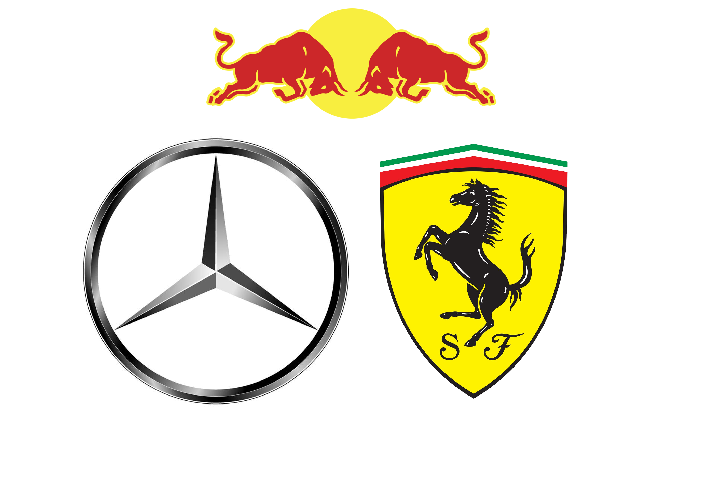
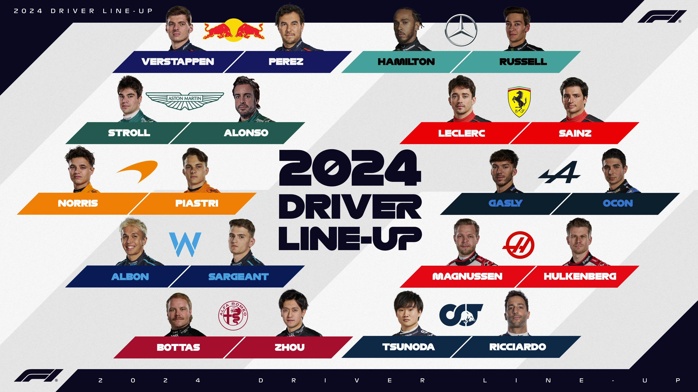
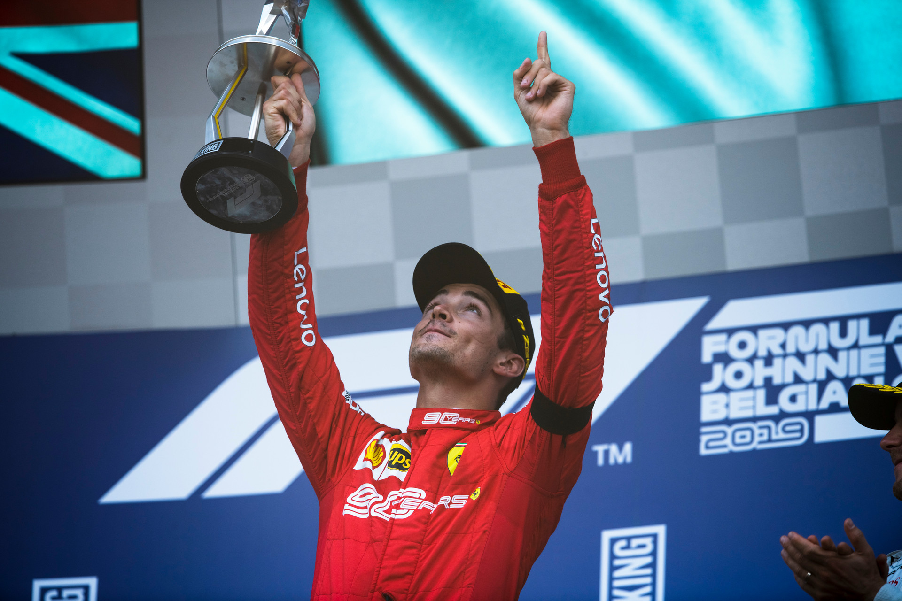

What is Formula 1?
Formula 1, Often referred as F1, is the heighest class of single-seater auto racing sanctioned by the Fédération Internationale de l'Automobile (FIA). It involves a seriese of races knows as Grand Prix held on circuits worldwide. The cars in F1 are highly specialised, with advanced technology, and the drivers are among the best in the wolrd. This sport is known for its speed, precision and intense competition.
Who are the F1 Teams
Formula 1 is a team sports. It needs to be to change all 4 tires on a car in under 2 seconds! F1 teams design and build their cars and get them ready to race. Each has their own history. Each has their own unique approach. All want to be the fastest. But who should you root for?
Who Are the Drivers
Extreme g-forces. Daring decisions made in the blink of an eye – and at 370km/h. Dramatically battling to be the best, Formula 1 drivers are more like fighter pilots than sportspeople. Only 20 get the chance to compete, and they push themselves and their incredible machines to the very limit.
F1 Championships
Every Year, the most Dominent Driver with the most points win the Championship. So far 73 world Championships have been won by 34 fearless Drivers